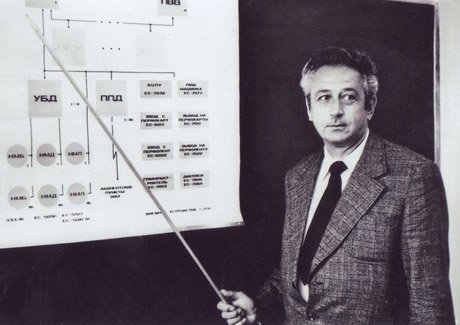
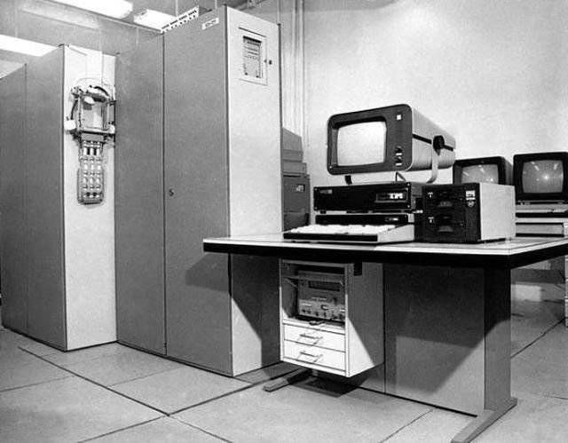
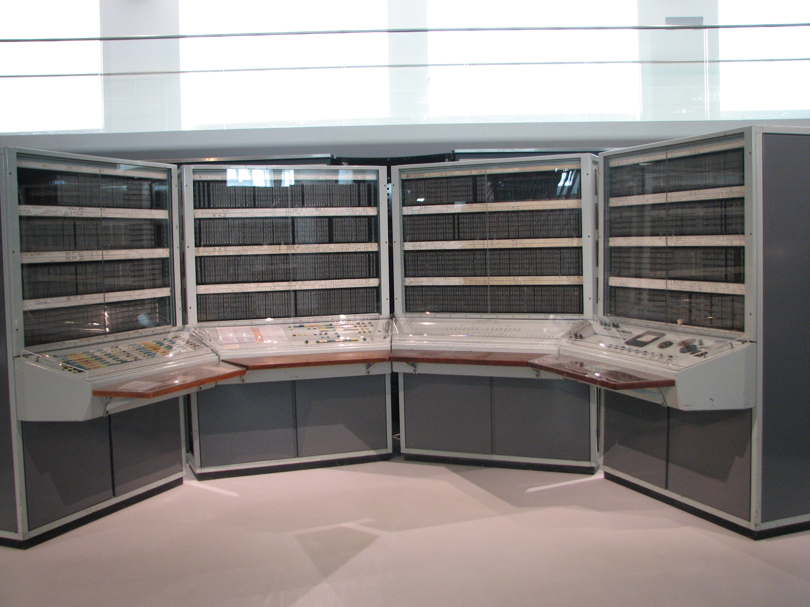
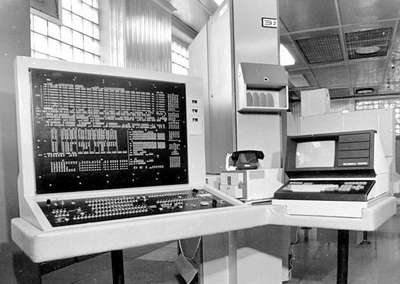
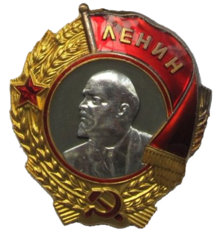
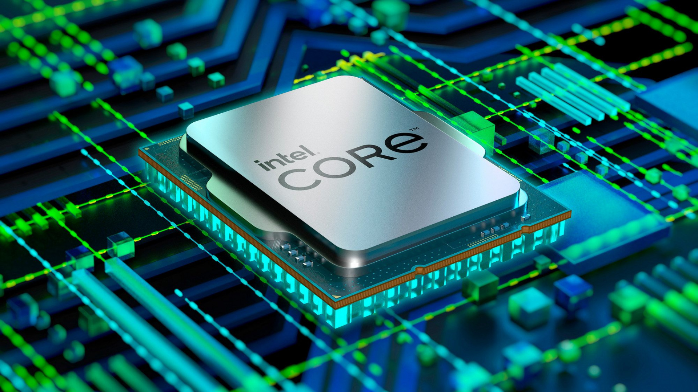
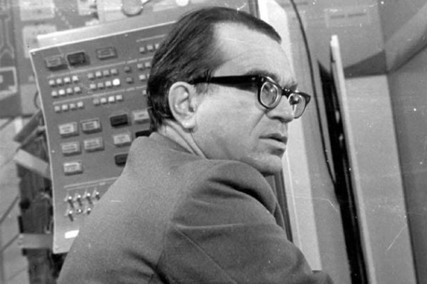
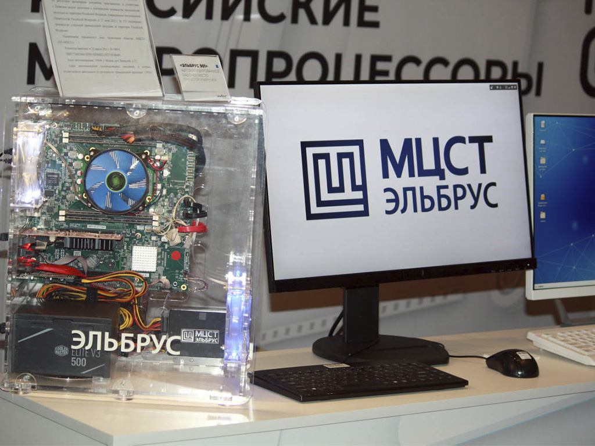
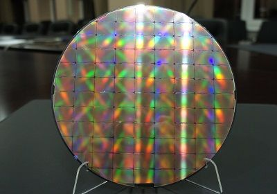

История создания процессоров "Эльбрус"
Мало кто знает, но у истоков создания самого известного в мире процессора Intel Pentium были и советские специалисты и инженеры. В свое время СССР добился достаточно серьезных достижений в создании компьютерной техники.
Начало
История «Эльбруса» достаточно обширна. Работы над первым компьютером с таким названием велись с 1973 по 1978 год в ИТМиВТ им. Лебедева, руководил этими работами Б. С. Бурцев, разработка велась при участии Бориса Бабаяна, который являлся одним из замов главного конструктора. В то время основным заказчиком данной продукции, конечно же, выступали военные.
“Эльбрус” – это прежде всего название процессорной архитектуры и разработанных на её основе суперкомпьютеров.

Первый компьютер
Первый компьютер «Эльбрус» обладал модульной архитектурой и мог включать в себя от 1 до 10 процессоров на базе схем средней интеграции. Быстродействие данной машины достигало 15 миллионов операций в секунду. Объем оперативной памяти, которая была общей для всех 10 процессоров, составлял до 2 в 20 степени машинных слов или, если применять принятые сейчас обозначения, 64 Мб. Однако самым интересным в «Эльбрусе-1» была именно его архитектура. Созданный в СССР суперкомпьютер стал первой в мире коммерческой ЭВМ, которая применяла суперскалярную архитектуру. Ее массовое применение за рубежом началось только в 90-х годах прошлого века с появлением на рынке доступных процессоров Intel Pentium.

Предшественники
Позднее выяснилось, что подобные разработки существовали еще до «Эльбруса», ими занималась компания IBM, но работы по данным проектам не были завершены и так и не привели к созданию конечного коммерческого продукта. По словам В. С. Бурцева, являвшегося главным конструктором «Эльбруса», советские инженеры старались применять самый передовой опыт как отечественных, так и зарубежных разработчиков. На архитектуру компьютеров «Эльбрус» повлияли не только компьютеры компании Burroughs, но и разработки такой известной фирмы, как Hewlett-Packard, а также опыт разработчиков БЭСМ-6. История компьютеров Эльбрус При этом немалая часть разработок была оригинальной, к ним относится и суперскалярная архитектура. Кроме этого для организации передачи потоков данных между периферийными устройствами и оперативной памятью в компьютере могли применяться специальные процессоры ввода-вывода. Таких процессоров в составе системы могло быть до 4-х штук, они работали параллельно с центральным процессором и обладали своей собственной памятью.

Эльбрус-2
Следующим этапом работ явилось создание компьютера «Эльбрус-2». Эти ЭВМ отправились в серийное производство в 1985 году. По своей внутренней архитектуре они не сильно отличались от «Эльбрус-1», но применяли новую элементную базу, что позволило увеличить максимальную производительность до 125 млн. операций в секунду. Объем оперативной памяти компьютера увеличился до 16 млн. 72-разрядных слов или 144 Мб. Максимальная пропускная способность каналов ввода-вывода «Эльбруса-2» составляла 120 Мбайт/с.
Данные компьютеры активно применялись в СССР в областях, которые требовали большого количества вычислений, в первую очередь в оборонной отрасли. ЭВМ «Эльбрус-2» эксплуатировались в ядерных исследовательских центрах в Челябинске-70 и в Арзамасе-16 в ЦУПе, наконец, именно этот комплекс, начиная с 1991 года, применялся в системе ПРО А-135, а также на других военных объектах страны.
Помимо двух перечисленных выше компьютеров, также выпускался ЭВМ общего назначения «Эльбрус 1-КБ», создание данного компьютера было окончено в 1988 году. До 1992 года было произведено 60 таких ЭВМ. Они были основаны на технологиях «Эльбруса-2» и применялись для замены устаревших машин БЭСМ-6. При этом между «Эльбрус 1-КБ» и БЭСМ-6 существовала полная обратная программная совместимость, которая была дополнена новыми режимами работы с увеличенной разрядностью чисел и адресов.

Награды
Создание компьютеров «Эльбрус» было по достоинству оценено руководством Советского Союза. За разработку «Эльбруса-1» многие инженеры были награждены орденами и медалями. Борис Бабаян был награжден Орденом Октябрьской революции, его коллега В. В. Бардиж – орденом Ленина. За разработку «Эльбруса-2» Бабаян с рядом своих коллег был удостоен Ленинской премии, а генеральный конструктор В. С. Бурцев и ряд других специалистов – Государственной премии.

Эльбрус-3
После завершения работ над ЭВМ «Эльбрус-2» в ИТМиВТ взялись за разработку ЭВМ на базе принципиально новой процессорной архитектуры. Проект, который был назван достаточно просто – «Эльбрус-3», также значительно опередил аналогичные разработки на Западе. В «Эльбрусе-3» впервые был реализован подход, который Борис Бабаян называет «постсуперскалярным». Именно такой архитектурой в будущем обладали процессоры Intel Itanium, а также чипы компании Transmeta. Стоит отметить, что в СССР работы над данной технологией были начаты в 1986 году, а Intel, Transmeta и HP приступили к реализации работ в этом направлении лишь в середине 1990-х годов.
Неудачи
К сожалению, «Эльбрус-3» так никогда и не был запущен в серийное производство. Его единственный работающий экземпляр был построен в 1994 году, но в это время он был никому не нужен. Логическим продолжением работ над данным компьютером стало появление процессора «Эльбрус-2000», известного также как E2K. У российской компании имелись большие планы по серийному производству данного процессора, который должен был пойти в серию одновременно или даже еще раньше, чем Itanium. Но из-за отсутствия необходимого объема инвестиций, все данные планы не были реализованы и так и остались на бумаге.
Российский след в процессорах компании Intel
Владимир Пентковский – является выдающимся российско-американским ученым, доктором технических наук, который окончил факультет ФРТК МФТИ. Он принимал непосредственное участие в разработке процессоров Pentium III, Core 2 Duo, HAL9000, Matrix, является разработчиком высокоуровневого языка программирования Эль-76, который использовался в компьютерах «Эльбрус». С 1970 года он работал в Институте точной механики и вычислительной техники, где успел принять участие в создании суперкомпьютеров «Эльбрус-1» и «Эльбрус-2». В 1986 году Пентковский возглавил работы по созданию 32-разрядного процессора Эль-90 для «Эльбруса-3».
К 1987 году работы над созданием архитектуры нового микропроцессора были закончены, в 1990 году были выпущены первые его прототипы. В 1991 году он приступил к работам над разработкой Эль-91С, взяв за основу предыдущую версию процессора, однако финансирование данного проект было остановлено из-за развала страны. Естественно, специалист такого уровня не мог пропасть. В 1989 году Владимир Пентковский уже ездил в США в исследовательский центр компании Intel в рамках программы по обмену опытом. С 1993 года он начинает работать в компании Intel, став одним из ведущих ее инженеров, разработка знаменитых процессоров Pentium происходила при его непосредственном участии. Презентация процессора Pentium состоялась 22 марта 1993 года, примерно через несколько месяцев начали появляться первые компьютеры, построенные на их основе.

Владимир Пентковский
Владимир Пентковский является одним из авторов векторного (SIMD) расширения команд SSE, которое впервые было использовано в процессорах Pentium-III. Является автором более чем 50 различных патентов, многие из которых до сих пор используются в современных процессорах. В процессорах Intel Владимир Пентковский воплощал на практике знания, которые им были получены в России, многое он додумывал уже непосредственно во время разработки моделей. В 1995 году американская компания представила более совершенный продукт Pentium Pro, который по своим характеристикам напоминал процессор Эль-90. Главным архитектором данного процессора считается именно Владимир Пентковский.

Российские разработки используются и по сей день
В настоящее время Пентковский продолжает работать в компании Intel. Так что процессор, на котором, возможно, работает ваш персональный компьютер или ноутбук вполне может иметь российские корни и мог бы быть даже произведен в нашей стране, если бы не печально известные события 1991 года и их последствия.
«Эльбрус» все еще жив
Хотя СССР больше нет, бренд «Эльбрус» все еще жив. Процессоры и готовые решения на их базе сегодня продвигает на рынке компания МЦСТ. На сегодняшний день компьютеры компании МЦСТ в основном предназначены для: военных ведомств России, стран СНГ и БРИК; индустрии гражданского производства; РЛС гражданского назначения (наземного, морского и воздушного транспорта). Для бизнеса и гражданских лиц, которым необходимы особо надежные и защищенные компьютеры. Компьютеры компании обладают различным конструкторским исполнением, разным классом защиты в зависимости от требований. Все они обладают поддержкой или возможностью работы с GPS и ГЛОНАСС в зависимости от потребностей покупателя устройства.
Эльбрусы нового тысячелетия
В настоящее время компания продвигает на рынке 2 своих основных микропроцессора и устройства на их базе. Первый из них – это Эльбрус-2С+, который является первым гибридным высокопроизводительным процессором компании МЦСТ. Процессор содержит в себе два ядра архитектуры Эльбрус и четыре ядра цифровых сигнальных процессоров (DSP) компании Элвис. Основной сферой его использования являются системы цифровой интеллектуальной обработки сигнала, к которым относят анализаторы изображений, радары и другие подобные устройства.

Эльбрусы на 90нм
Вторым продуктом является микропроцессор МЦСТ R1000 (проектное название МЦСТ-4R) – четырехядерная модель, построенная на кристалле с 64-битной архитектурой SPARC v.9. Процессор работает на частоте 1 ГГц при технологических нормах выпуска 90 нм. Каждое из его ядер в состоянии декодировать и отправлять на выполнение до 2-х команд за такт. Процессор поддерживает дополнительные инструкции для выполнения упакованных и комбинированных операций, а также векторные расширения VIS1 и VIS2. К возможным областям использования процессора МЦСТ-4R, а также ПК на его основе МВС4/С, МВС4-РС относят:
Носимые малогабаритные бытовые компьютеры для применения в качестве:
- компьютера для ведения работы в полевых условиях, например, для проведения оперативных расчетов, подготовки документов различного назначения, хранения справочной информации, и др.
- Компьютеры автоматизированных рабочих мест операторов для применения в роли средств отображения информации, документирования выполненной работы и др.;
- Терминалы связных и радиоэлектронных систем, носимых и передвижных комплексов аппаратуры;
- Встраиваемые управляющие компьютеры для управления работой специальных объектов и решения сложных задач обработки информации в масштабе реального времени;
- Мобильные отказоустойчивые серверы для создания автоматизированных систем спецназначения, в частности, автоматизированных систем органов гражданского и военного управления.
